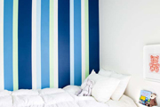

Sobre a Empresa
A House Paint, presente no mercado paranaense desde 1990, é uma das empresas líderes
no segmento de pinturas em geral na cidade de Chapecó e região.
A empresa atua nos segmentos acabamentos, gessos decorativos e pinturas de áreas internas ou
externas de residências com finíssimo acabamento e qualidade.
Missão
Oferecer serviços de qualidade respeitando os prazos e as metas estabelecidas por seus clientes.
Visão
Ser reconhecida, pela qualidade dos serviços prestados e pelo desenvolvimento
constante de seus colaboradores, como a melhor empresa de pintura no seu segmento.
Valores
– Respeitar o ser humano.
– Agir e crescer de forma ética e sustentável.
– Fazer bem feito e cada vez melhor
Serviços
A House Paint tem como princípio fundamental a extrema qualidade nos serviços prestados ao
longo de sua história e atuação no segmento de acabamentos e pinturas residencias, veja a seguir
quais serviços são prestados pela empresa que conta uma uma equipe de profissionais qualificados e
sempre atualizados com as melhores técnicas e tecnologias existentes neste ramo de atuação.
Acabamentos
Trabalhamos com diversos tipos de acabamentos de massa-corrida, texturas, revestimentos cerâmicos, porcelanatos.
Gesso
Nossa equipe realizada a instalação de gesso decorativo, com as melhores técnicas para
reproduzir detalhes sofisticados em seus ambientes internos, molduras, rebaixamento de teto e
multicamadas para iluminação.
Pintura de grades e aberturas
Utilizando materiais de alta qualidade e durabilidade a empresa realiza a pintura de grades,
portões, portas e janelas internas ou externas.
Pintura externa
A pintura externa residencial é realizada com extremo cuidado desde a limpeza e
impermeabilização das superfícies até a pintura final sempre aplicando as melhores técnicas
para que a qualidade do serviço não seja comprometida ao longo do tempo.
Pintura interna
Trabalhamos em obras novas e também em residências usadas, com foco total na qualidade para
que o acabamento final seja impecável, a pintura interna conta com profissionais especializados
para cada tipo de superfície: madeira, alvenaria, gesso, texturas e revestimentos especiais.
Clientes
Aqui você pode visualizar as imagens de alguns serviços já realizados pela House Paint ao longo do tempo,
recomendamos aos nossos clientes a visualização das fotos e também recomendamos visitas técnicas em
algumas obras para que verifiquem como nossa equipe trabalha.
Opiniões e depoimentos de alguns clientes

Fiquei satisfeito com os serviços de pintura da House Paint.
É uma empresa comprometida com a satisfação do cliente e isso é fundamental pra mim
(Tulio Lemos Veloso Machado)

A House Paint estava certa sobre o orçamento. Disseram-me o custo para
pintar minha casa e entregaram exatamente o que eles disseram que seria.
Uma raridade nos dias de hoje. (Rodrigo Pacheco)

Muito obrigado! Estou 100% satisfeito com o trabalho.
Eles fizeram um trabalho grande, profissional. Meus agradecimentos à equipe por seu bom
trabalho e profissionalismo. (Norberto Antunes)

Quando eu chamei a empresa House Paint para fazer a pintura e
acabamentos da minha casa, o prazo era o aspecto fundamental. Eu precisava ter esse serviço
em um tempo específico e todos me deram um prazo maior. A House Paint fez o trabalho no prazo
prometido (Raquel Andrade)

Quando falei com o funcionário da House Paint responsável pelo orçamento,
eu tinha dois outros pintores vindo fazer o orçamento, mas eu cancelei a visita deles.
Eu estava totalmente a vontade e sentia que o funcionário da House Paint estava sendo honesto.
(Kas & Natalie Melowsky)
Orçamentos
A House Paint conta com uma equipe especializada para realizar o orçamento de sua obra,
utilize esta ferramenta para solicitar um orçamento e receber uma visita em sua casa para um
levantamento mais preciso e detalhado de suas necessidades.
Contatos
Fique a vontade para entrar em contato com a gente, solicitar um orçamento ou tirar suas dúvidas.
Endereço: Av. Nereu Ramos, 3777D - Seminário, Chapecó - SC, 89813-000 Ver Mais
Horário de atendimento: 07:00 às 19:00 de segunda à sábado.
Telefone: (49) 3319-2600
E-mail: contato@housepaint.com.br
Site: www.housepaint.com.br